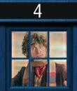
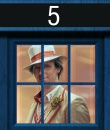
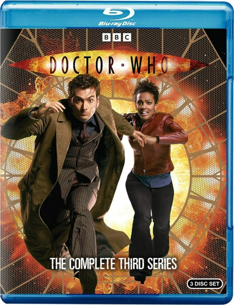
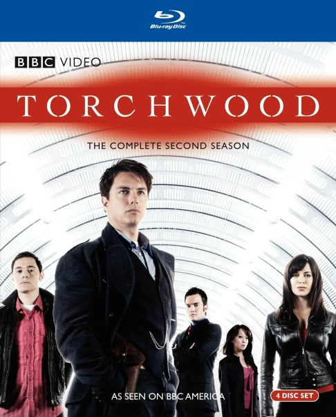
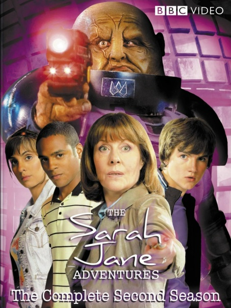
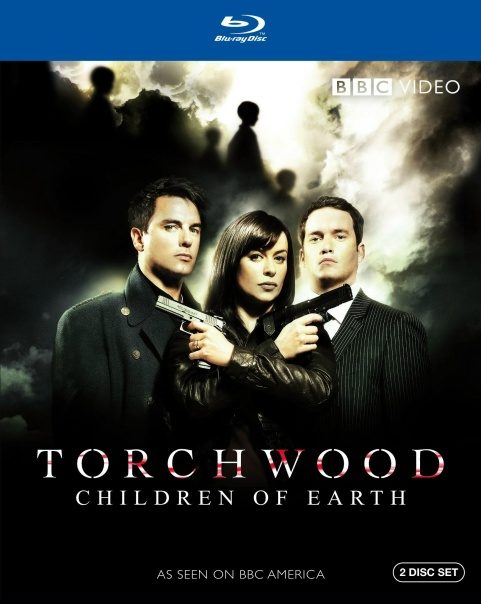

Таблица коллекции |  Навигация по канону |  Связные экранизации |
Таблица коллекции | Навигация по канону | Связные экранизации |






Эра Десятого Доктора
Актёр: Дэвид Теннант

Дебют Дэвида Теннанта: обаятельный, быстрый, с тёмной стороной. Роза остаётся, но параллельные миры и киберармия ставят вопрос о цене привязанности, а финал разводит их навсегда.
Наш плейлист сезона в ВК

Команда охотников за пришельцами в Кардиффе: жёстче и взрослее «Доктора Кто». Джек Харкнесс ведёт команду с нечистого прошлого.

Марта Джонс вступает как спутница, Мастер возвращается как главный антагонист. Сезон исследует одиночество Доктора и цену героизма.

Детский спин-офф с сердцем и моралью: Сара Джейн и подростки защищают Землю от инопланетных угроз.

Баланс между монстром недели и сквозной аркой крепнет, прошлое Джека раскрывается глубже. Трагедия финала меняет команду навсегда.

Донна Ноубл: дружба без романтики, чистая химия. Даврос возвращается, и финал ставит вопрос о границах милосердия.

Команда крепнет, появляется кроссовер-связь с основным сериалом. Тон чуть серьёзнее, ставки выше.

Пять серий, один напряжённый триллер о сделке правительства с пришельцами. Самый мрачный и мощный сезон спин-оффа.

Баланс между приключением и драмой оттачивается. Появление нового персонажа расширяет динамику команды.